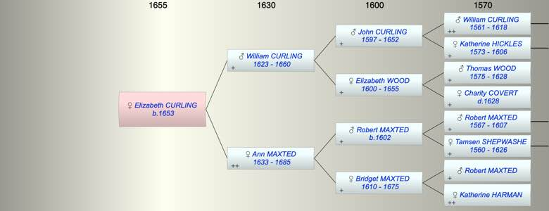

| [Index] |
| Elizabeth CURLING (1653 - ) |
|  |
| b. 1653 at St Laurence |
| Parents: |
| William (II) CURLING (1623 - 1660) |
| Ann MAXTED (1633 - 1685) |
| Events in Elizabeth CURLING (1653 - )'s life | |||||
| Date | Age | Event | Place | Notes | Src |
| 1653 | Elizabeth CURLING was born | St Laurence | Note 1 | ||
| 1660 | 7 | Death of father William (II) CURLING (aged 37) | St Laurence | Note 2 | |
| 1685 | 32 | Death of mother Ann MAXTED (aged 52) | St Laurence | Note 3 | |
| Personal Notes: |
|
Possible marriage but no supporting eveidence and Elizabeth's mother would not have been a widow:
Samuel GOODSON of St Peter in Thanet, husb, ba, 27 & Eliz. CURLING, s.p., maiden, 22, whose mother Ann Curling, w. consents, as is testified by Samuel Goodson the elder (father of Samuel afsd) of St. John's in Thanet, yeoman. At S.M. Bredin, Cant. 23 Oct 1671 Her age should be 19. See also Kent Marriage Index, FMP Samuel Goodson husbandman |
| Created on a Mac™ using iFamily for Mac™ on 8 Oct 2023 |